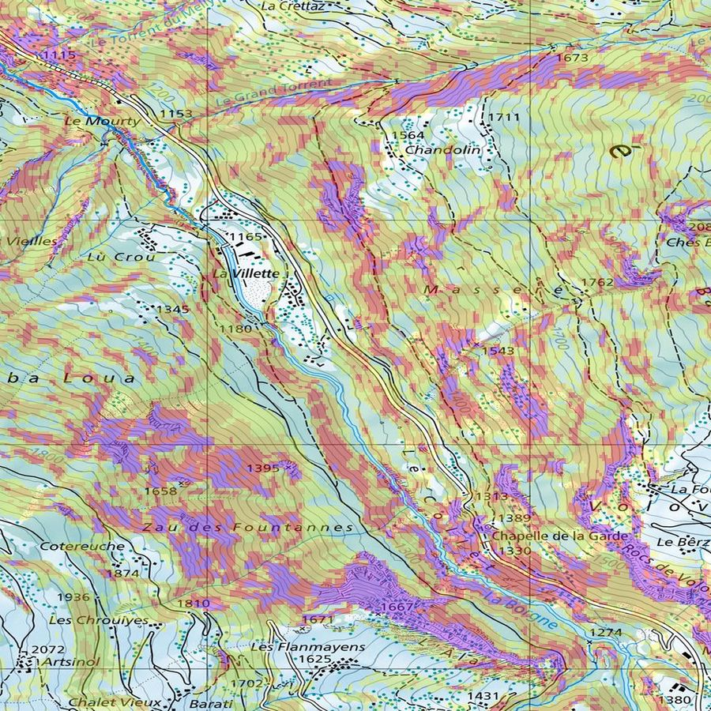

Swiss topo maps on your Garmin watch.
Pre-built map packs of Switzerland for Garmin watches. LK25 raster cartography with a slope-shading and ski/hiking route overlay, sized to fit your watch's tile limit.

What is this?
A way to put Swiss topographic maps on your Garmin watch. Same LK25 cartography you'd see on a paper Swisstopo map or in SchweizMobil, with a slope-angle and route overlay on top. Not an app. Just files you copy to the watch over USB.
❄ Winter
LK25 Winter base, with a 4-class slope-shading overlay and SAC ski tours coloured by difficulty (blue, red, black).
☀ Summer
LK25 Summer base, with the slope overlay and the Wanderwege network coloured by category (yellow, red, blue).
Switzerland is split into 26 regions
A Garmin watch can hold one regional pack at a time (plus the always-on Switzerland overview). Pick the region that covers your trips, copy it across, and use it as long as your trips fall inside it. Swap only when you move to a different region.
Two ways to find the right pack
Not sure which of the 26 regions covers your destination? Pick the workflow that fits.
Drop your GPX (or browse the map)
Drop a tour file (from SchweizMobil, Komoot, Strava, etc.) and we'll tell you which regional pack covers it, usually a single file. No GPX? Open the picker and you can see all 26 regions on a Swisstopo basemap and download the one you need.
Paint a custom area
Going somewhere that crosses two regions, or want a single pack focused on the spots you actually visit? Draw the area you need. We build a custom pack and email it to you, usually within an hour, occasionally longer when the build queue is busy.
Advantages and limitations
Worth reading before you start.
👍 What you get
- Real Swisstopo LK25 cartography, the same look as the paper map, not a generic vector approximation.
- 4-class slope-shading overlay (≥30°, ≥35°, ≥40°, ≥45°) for backcountry awareness.
- Ski tours coloured by SAC difficulty, hiking trails coloured by category.
- Works fully offline once copied to the watch.
- Pick a region by GPX or name, or paint a custom area.
⚠ What to know first
- The watch can only show one regional pack at a time, plus the Switzerland overview. If your next outing is in a different region, you swap before you go.
- Swapping happens by plugging the watch into a computer over USB. There's no in-watch toggle for individual map packs.
- These are raster maps. They look great but don't give turn-by-turn re-routing the way Garmin's own TopoActive does.
- Slope shading is advisory only. It does not replace the daily SLF avalanche bulletin or your own judgement on the day.
- Setup is a manual file copy. The guide is step-by-step, but plan 15 minutes the first time.